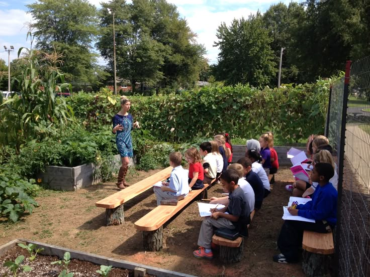
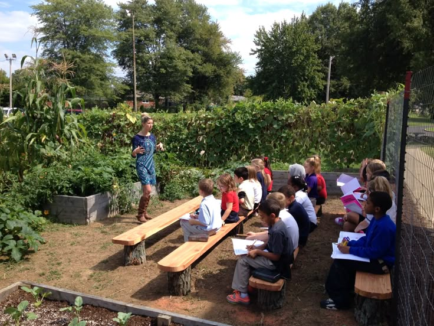

Gardening (6-Week Course)
Course Background
Gardening is one of South Africa's most valuable skills, providing food security, income opportunities, and environmental benefits. This practical 6-week course was developed to empower individuals with the knowledge and skills needed to create and maintain productive gardens, whether for personal use or professional employment. The program recognizes the growing demand for skilled gardeners in both residential and commercial settings.
Our gardening course is designed to be practical and immediately applicable to South African growing conditions. Students learn to work with local soil types, climate patterns, and water resources. The curriculum emphasizes sustainable gardening practices that are both environmentally friendly and economically viable, making it possible for graduates to create beautiful, productive gardens even with limited resources.
 

Course Overview
This hands-on course covers all aspects of gardening from soil preparation to plant care and harvesting. Students work in actual garden plots, learning by doing. The course covers both ornamental gardening and food production, giving students versatile skills applicable to various gardening contexts. Emphasis is placed on sustainable practices and water-wise gardening techniques suitable for South Africa's climate.
Modules Covered
- Soil Science and Preparation: Understanding soil types, pH levels, improving soil quality, and preparing garden beds for planting.
- Plant Selection and Planting: Choosing appropriate plants for different seasons and conditions, proper planting techniques, and spacing.
- Water Management: Efficient irrigation methods, water conservation techniques, and managing gardens during dry periods.
- Fertilization and Composting: Understanding plant nutrition, creating and using compost, and applying fertilizers effectively.
- Pest and Disease Management: Identifying common garden pests and diseases, using organic and chemical control methods safely.
- Seasonal Garden Planning: Planning year-round gardens, understanding planting seasons, and crop rotation for vegetable gardens.
- Garden Maintenance: Pruning, weeding, mulching, and ongoing care techniques to maintain healthy, productive gardens.
Learning Outcomes
Upon successful completion, students will be able to:
- Prepare and improve soil for optimal plant growth using various techniques and amendments.
- Select and plant appropriate plants for different seasons, soil types, and growing conditions.
- Implement efficient watering systems and water conservation practices in garden management.
- Create and maintain productive vegetable gardens that provide fresh produce year-round.
- Design and maintain attractive ornamental gardens with flowers, shrubs, and trees.
- Identify and manage common garden pests and diseases using safe, effective methods.
- Plan gardens that are both beautiful and sustainable, requiring minimal ongoing maintenance.
Who Should Enroll?
This course is perfect for aspiring gardeners, domestic workers involved in garden care, individuals interested in food security, and anyone wanting to develop professional gardening skills. No prior gardening experience is required. The course is particularly valuable for those seeking employment as gardeners in private homes, estates, or commercial properties, or for individuals wanting to start their own gardening business.
Course Structure
The 6-week program includes both classroom instruction and hands-on work in garden plots. Classes are held twice weekly, with each session lasting 3 hours. Students work directly with plants, soil, and tools, gaining practical experience that builds confidence. The course includes field trips to successful gardens and nurseries, providing real-world examples of good gardening practices.
Duration: 6 Weeks (12 sessions)
Fee: R350 (includes use of tools and basic planting materials)
Certification: Graduates receive a Gardening Certificate from Empowering the Nation, recognized by employers and suitable for professional gardening positions or starting a gardening business.